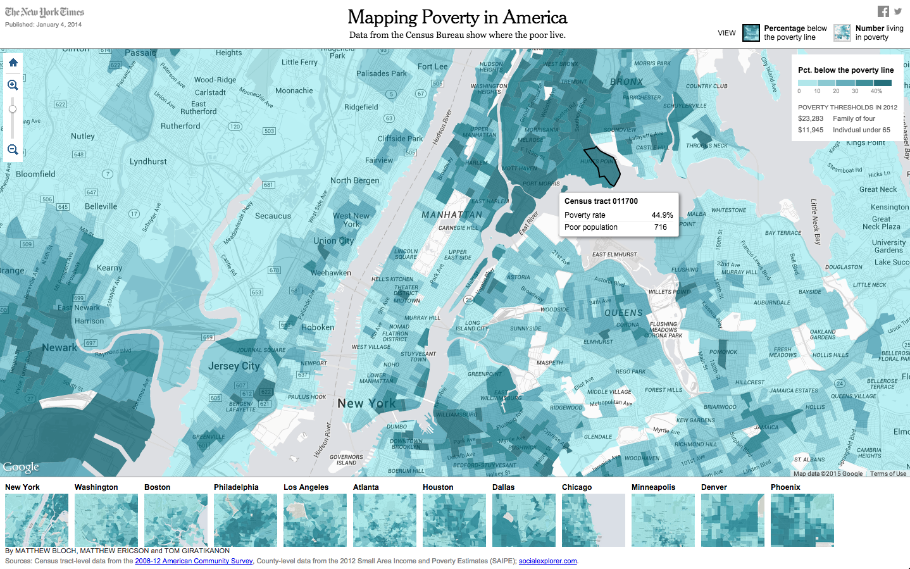
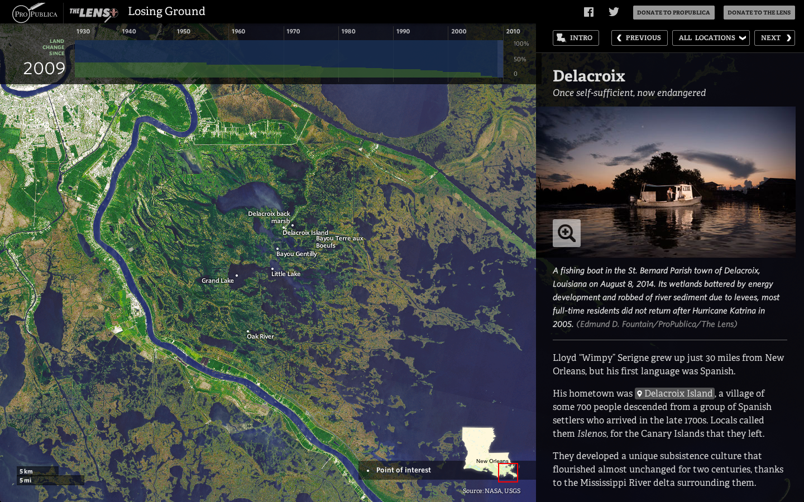
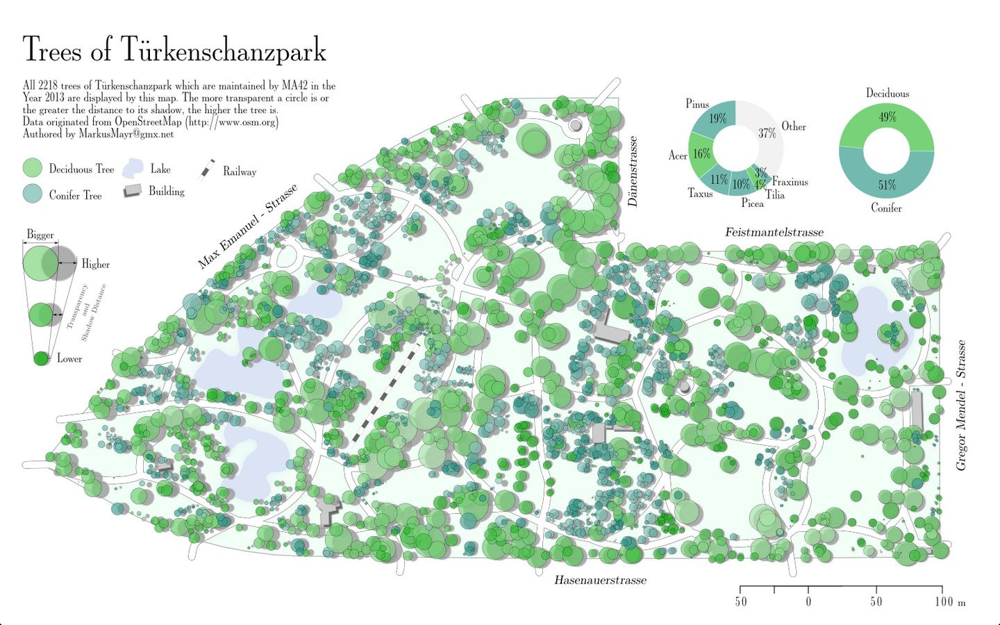
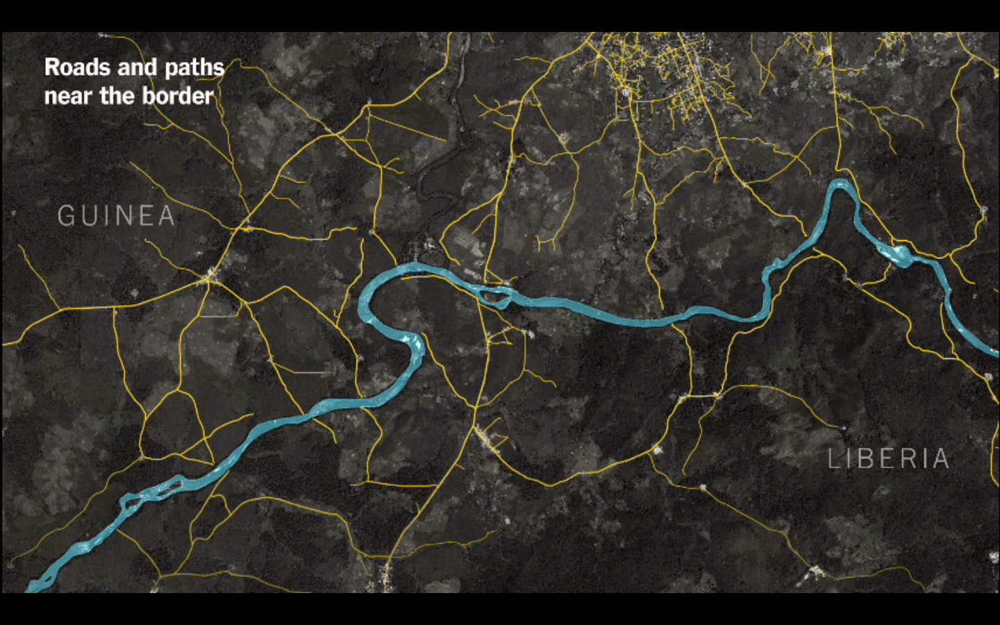
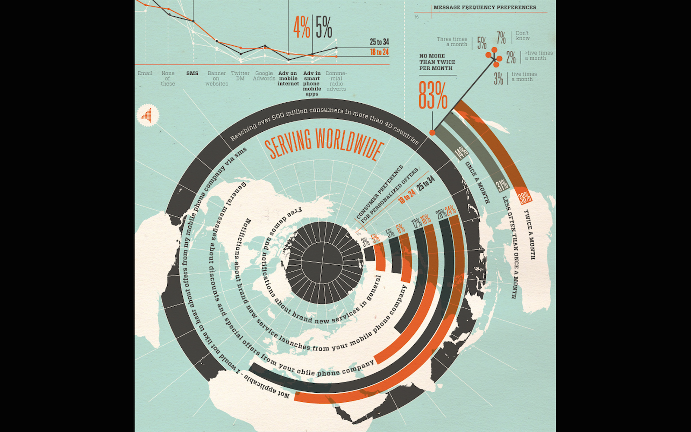
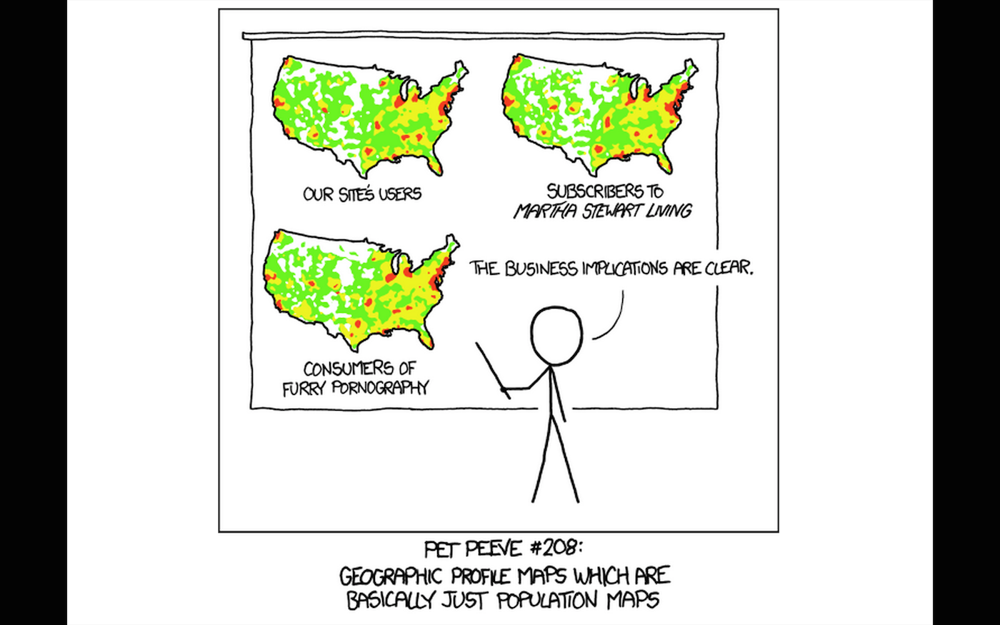
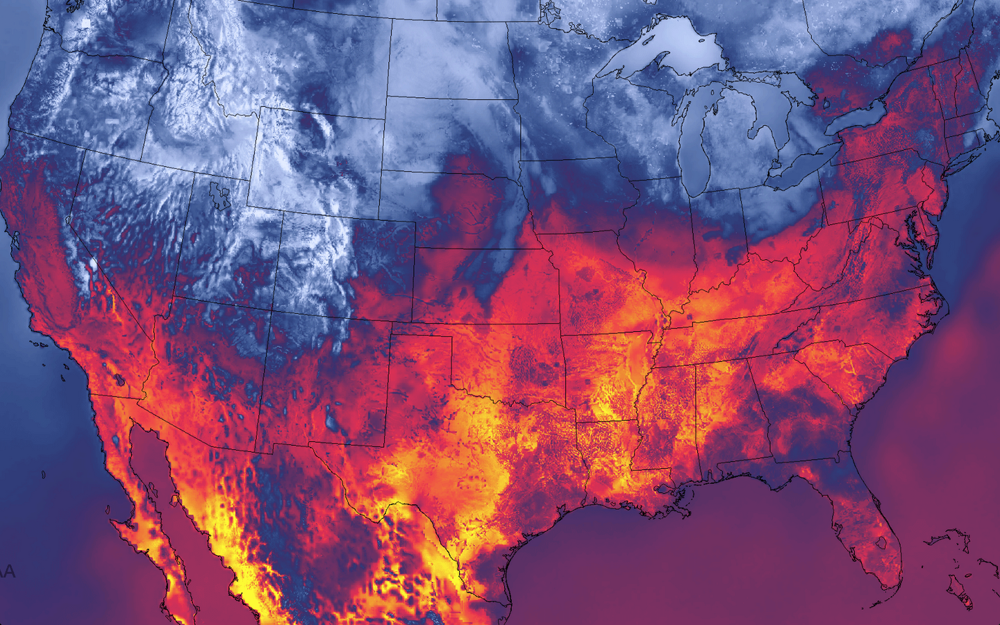
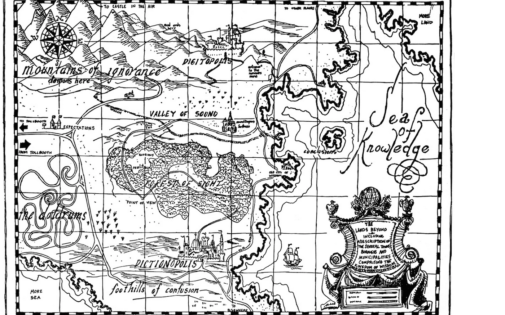

Designing good maps
1. Why use maps?
Maps entice exploration

Maps connect readers to places

Maps help tell a story
Maps combine art and
science

Intersection of G.I.S. and
graphic design
They are an interface with which to explore spatial data

2. What goes into designing a map?
Design principles
- Less is always more: embrace negative space
- Use hierarchy to convey importance: font size, weight, intensity
- Use the grid and the rule-of-thirds
- Use two fonts: one serif, one sans serif
3. Exercise restraint.
Don't make a map just because you can

Remember, maps can mislead


Here are some resources
- Google My Maps
- Knight Lab StoryMap
- CartoDB
- Chris Amico
